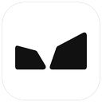

Quick start guide
Archicad now has a Tevavid menu next to its other menus: AI Assistant, Sun Analysis, Site from Map, Model Import and Settings. Each opens the Tevavid panel next to your model. The panel also opens by itself when Archicad starts, unless you turned that off.
Tevavid Tools is free and works with your own Claude:
Type in plain words, or use the microphone. For example:
Every change is a normal Archicad change, so Ctrl + Z (Cmd + Z on a Mac) undoes it. Click a step in the chat to see exactly what was sent to Archicad.
Open the panel's Settings tab and click Connect to Claude Desktop, then restart Claude Desktop.
Open the Sun tab, check the location (it comes from Options > Project Location, and every result depends on it), pick a date and click Run analysis. Coloured tiles appear on the floors of your rooms: blue is dark, red is bright. Drag the time slider or press play to watch the day go by, and switch between daylight (lux), hours of direct sun and the daylight factor. The tiles are on the layer Tevavid Sun Analysis; Remove the tiles deletes them.
The analysis needs zones for your rooms. It counts direct sun, light from the sky through openings and glass (glass passes the transparency of its surface, or 70%), and light reflected inside the room (standard reflectances: floor 20%, walls 50%, ceiling 70%), on a clear day.
Open Tevavid > Site from Map. With the project location set, choose a size and click Build the site: the real ground around your project becomes an Archicad Mesh, with the neighbouring buildings as blocks. The free elevation data is accurate to about 2 to 5 m, right for context and slopes. For levels on your plot, choose your surveyor's file (CSV points, or contours saved as DXF) and click Build from the survey.
Tip: the panel can be collapsed to a slim strip from its menu, and your conversations are kept under Recent.